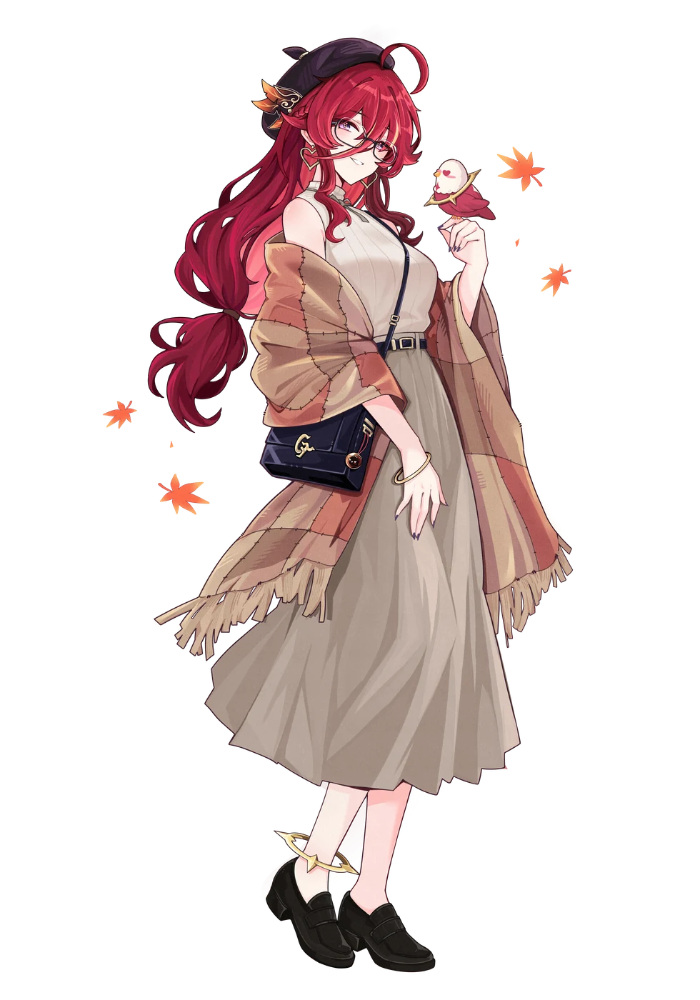
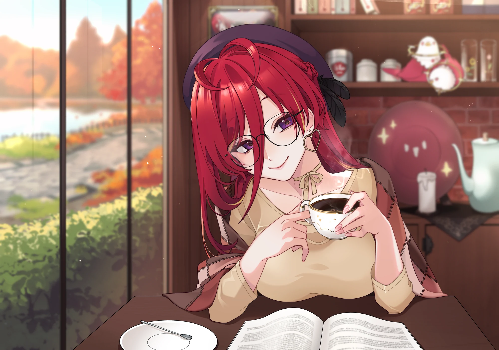
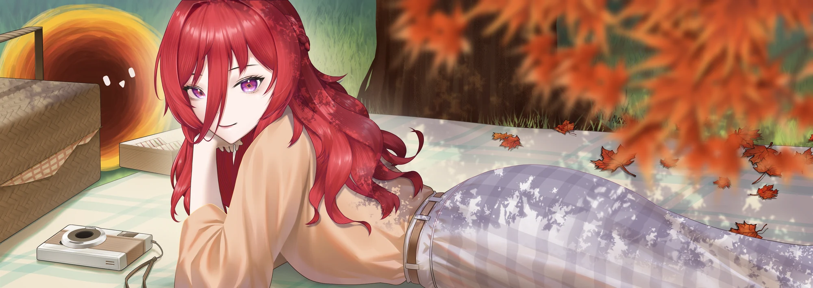
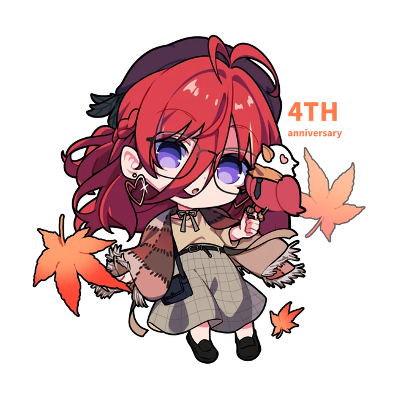

紙類周邊
200各品項數量
拿取資格：不限



四季走過，喜歡依然。
在一個有咖啡香的午後，
和同樣喜歡熙歌的你，
一起為這段四週年的旅程留下紀念。
Every season, a song.

拿取資格：不限
拿取資格：訂閱熙歌 YT 頻道
前往熙歌 YouTube ↗周邊照片將於後續公布。此處角色插畫為活動視覺，並非周邊商品照片。
飲品／甜品擇一，即為本次提供的入店低消資訊。
現場將發放周邊，使用投影機播放內容，並擺設過往熙歌場次的周邊。
紙類拿取資格不限，各品項數量 200；非紙類需訂閱熙歌 YouTube 頻道，各品項數量 80。周邊照片後續公布。
工作人員與繪師的完整名單將於後續公布。
謝謝每一份讓這場相遇成真的心意。
下一個四季，
也想和你一起。
#四季熙光皆成歌